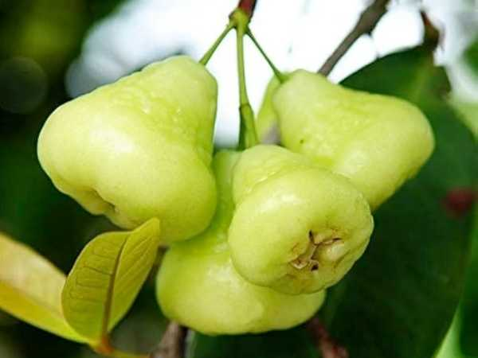

Syzygium samarangense
Common Names: Water Apple, Java Apple, Wax Apple, Rose Apple, Wax Jambu
Local Name: Neer Sathukudi (Tamil), Amrood (Hindi regional)
Family: Myrtaceae
Origin: Malay Peninsula, Southeast Asia
Plant Type: Perennial evergreen tree
Variety: Green-skinned water apple
Average Lifespan: 30–50 years
| Growth Habit | Medium to large spreading tree with dense canopy |
| Plant Size | 5–15 meters tall; canopy spread 6–10 meters |
| Leaves | Opposite, elliptic-oblong, 10–25 cm long, leathery, dark green with prominent midrib |
| Flowers | Creamy-white to yellowish-green, 2–3 cm across, borne in clusters on trunk and branches |
| Flower Characteristics | Cauliflorous (flowers on old wood); numerous stamens give a fluffy appearance; mildly fragrant |
| Fruit | Bell-shaped to pear-shaped, 4–8 cm long, waxy skin, crisp spongy flesh with hollow centre |
| Fruit Color | Pale green to light green when ripe; waxy sheen |
| Seed Characteristics | 0–3 small round seeds per fruit; many fruits are seedless |
| Root System | Moderately deep with spreading lateral roots |
| Climate | Tropical to warm subtropical; frost-sensitive |
| Temperature Range | 22–35°C ideal; does not tolerate temperatures below 5°C |
| Rainfall Requirement | 1500–3000 mm annually; prefers humid conditions |
| Soil Type | Deep, fertile, well-drained loamy to clay-loam soil |
| Soil pH Preference | 5.5–7.0 |
| Sun Requirement | Full sun to partial shade (6+ hours daily) |
| Spacing | 6–8 meters between trees |
| Irrigation Method | Basin or drip irrigation; regular watering during dry spells |
| Water Requirement | High; thrives near water sources and in humid environments |
| Can it Grow in Pots? | Yes, dwarf varieties in large containers (40+ liters) |
| Fertilizer Schedule | 3–4 times per year; increase before flowering season |
| Recommended Organic Fertilizers | Well-rotted FYM, vermicompost, bone meal, fish emulsion |
| Pesticide Frequency | As needed; monitor during fruiting season |
| Recommended Organic Pesticides | Neem oil, garlic-chili spray, sticky traps for fruit flies |
| Mulching Practice | Thick organic mulch around base to retain moisture; keep away from trunk |
| Training System | Open centre system; allow natural spreading habit |
| Pruning Time | After harvest; remove dead and crossing branches |
| How to Prune | Light pruning to maintain shape; thin interior for air circulation |
| Common Pests | Fruit fly, aphids, scale insects, leaf miners |
| Common Diseases | Anthracnose, sooty mold, root rot, leaf spot |
| Disease Prevention & Remedies | Good drainage, avoid waterlogging, copper-based fungicides, remove fallen fruit |
| Flowering Months | March–May and September–November (twice yearly in tropics) |
| Fruiting Season | May–July and November–January; 30–45 days after flowering |
| Days to Harvest | 30–45 days from fruit set |
| Harvest Indicators | Fruit develops full size, waxy sheen appears, slight give when pressed |
| Average Yield per Plant | 50–100 kg per tree per year (mature tree) |
| Pollination Type | Self-pollination and insect pollination |
| Pollination Notes | Bees and other insects are primary pollinators; wind assists |
| Pollination Details | Flowers attract bees with nectar; self-fertile but cross-pollination improves yield |
| Propagation by Seeds | Seeds germinate in 2–4 weeks; seedlings take 5–7 years to fruit |
| Propagation by Cuttings | Air layering (marcotting) is the preferred vegetative method; roots in 6–8 weeks |
| Propagation by Grafting | Approach grafting and budding on Syzygium rootstock for early fruiting |
| Water Usage | Moderate to high; benefits from proximity to water bodies |
| Soil Conservation Practices | Dense canopy reduces soil erosion; leaf litter enriches soil |
| Organic Practices Used | Mulching, composting, biological pest control |
| Companion Plants | Banana, coconut, turmeric as intercrops |
| Biodiversity Benefits | Attracts birds, bats, and pollinators; provides shade habitat |
| Commercial Production Regions | Taiwan, Thailand, Malaysia, Indonesia, India, Philippines |
| Market Uses | Fresh fruit, salads, juice, garnish |
| Processing Uses | Pickles, preserves, wine, vinegar |
| Market Value (Approx.) | ₹40–120 per kg (India); varies by season |
| Symbolism | Symbol of prosperity in Southeast Asian cultures; offered in temples |
| Traditional Uses | Bark and leaves used in traditional medicine for diarrhoea and fever; fruit eaten fresh as a cooling snack |
| Calories | 25 kcal per 100g |
| Dietary Fiber | 0.6 g per 100g |
| Vitamin C | 22 mg per 100g |
| Vitamin A | 340 IU per 100g |
| Iron | 0.07 mg per 100g |
| Potassium | 123 mg per 100g |
| Antioxidants | Contains flavonoids, phenolic acids, and vitamin C |
| Other Key Nutrients | Calcium, phosphorus, niacin, thiamine |
| Anxiety & Sleep | Not a primary medicinal use |
| Immune Support | Vitamin C content supports immune function |
| Anti-inflammatory Properties | Leaf extracts show anti-inflammatory and antimicrobial activity |
| Heart Health | Low calorie, high water content fruit supports hydration and heart health |
| Digestive Health | High water content aids digestion; bark decoction used for diarrhoea in folk medicine |
Disclaimer: Information provided is for educational purposes only and not a substitute for medical advice.
Add your field observations here.